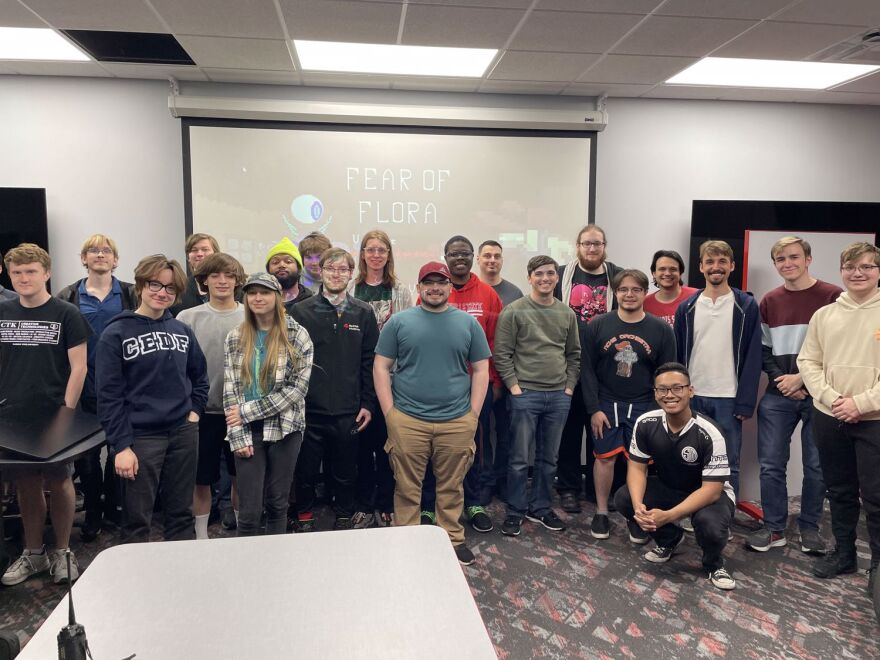

CTK Courses

200 Level Classes
201 - Basic Skills In The Digital Arts (3)
Introduction to the history, theories, current trends, practices, and core media in the digital arts.
202 - Foundations: Audio Theory (3)
This course presents the fundamentals of audio theory as applied to the physics and aesthetics of sound.
203 - Foundations: Recording and Sampling (3)
This course covers the aesthetics and technical skills required for the recording and sampling of instruments and the human voice.
204 - Foundations: Music Concepts (3)
This course covers the study of foundational music concepts, including basic theory, history, genres, and forms.
208 - Audio Production I (3)
This course introduces audio production techniques within a digital audio workstation (DAW) environment.
240 - Sound Design 1: Beginning Digital Audio (3)
Introduction to digital audio and aesthetic principles of sound.
260 - Arts Technology Performance Studio (3)
Creative and interdisciplinary experiences in solo and ensemble performance integrating computer technology into music, dance, performance art, or theatre production.
300 Level Classes
301 - Web Design and Development (3)
Theory, technical skills, and design concepts for the creation of standards-compliant web sites.
302 - Computer Programming for Creatives (3)
Text-based, object-oriented, computer programming concepts for areas including interactive design, user interfaces, data visualization, and gaming.
303 - Advanced Web Design and Development (3)
Advanced programming methods for the creation of dynamically generated web sites and interactive web applications.
320 - Programming Dynamic Media (3)
Programming concepts using a graphical, dataflow environment for media-based performance, interactive installation, and generative art/sound.
330 - Web Video (3)
Students will learn technical skills and concepts for the creation of fictional and documentary video content specifically for delivery on the web.
340 - Sound Design 2: Advanced Digital Audio (3)
Advanced digital audio and aesthetic principles of sound.
345 - Sequencing And Digital Audio (3)
Study of music synthesis through MIDI sequencers, digital sound editing and recording, and the integration of digital audio and MIDI.
351 - Game Design I (3)
This foundational game design class explores concepts and frameworks for understanding and designing for engagement, fun, and motivation in games.
354 - User Experience Design for Games (3)
This course explores common trends concerning interface design in gaming for understanding how they influence a user s overall experience of a game.
377 - Motion Graphics (3)
Create motion graphics with compositing, animation, and visual effects (VFX) for broadcast, web, virtual and augmented reality, with focus on community engagement.